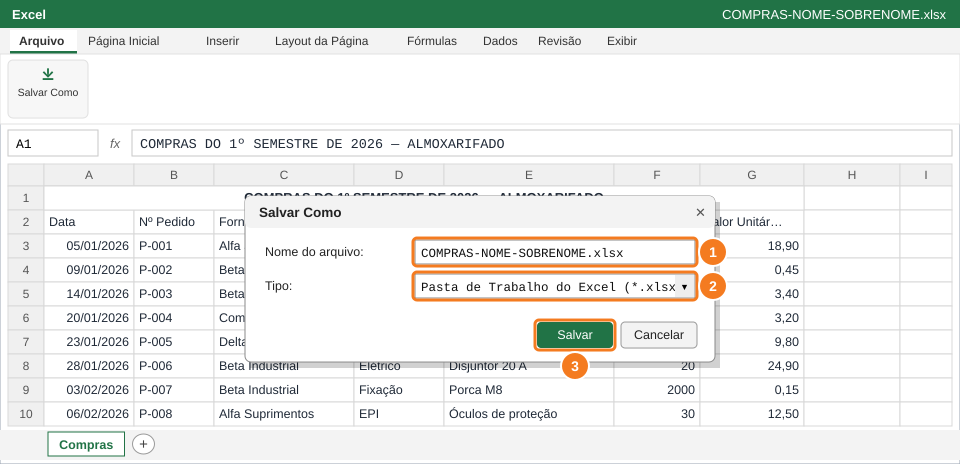
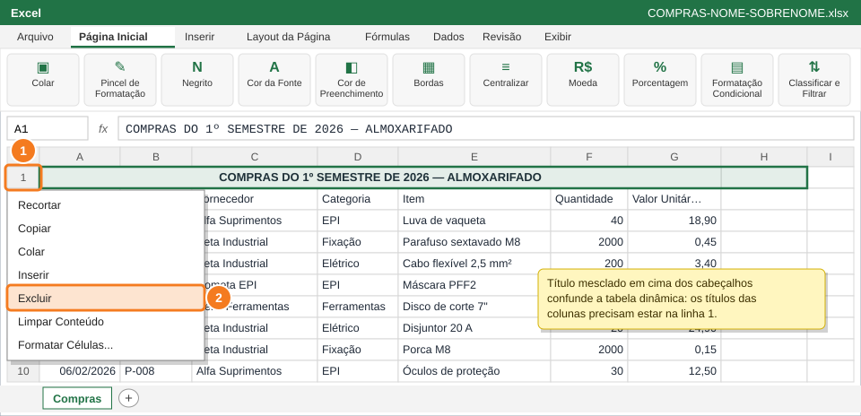
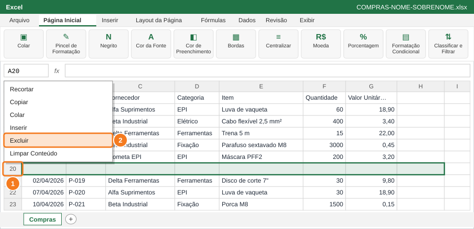
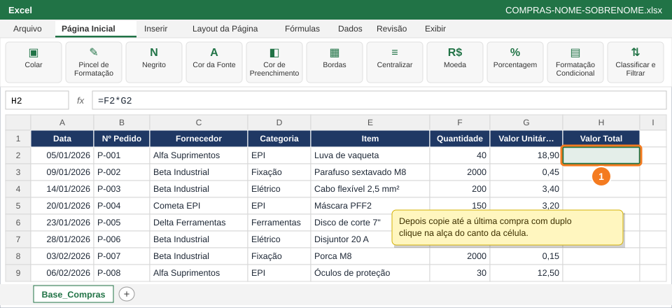
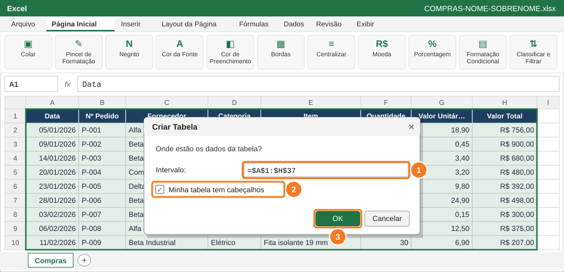

Deixar a base de compras pronta para a tabela dinâmica: tirar o que atrapalha (título mesclado e linha vazia), criar a coluna Valor Total e transformar os dados em Tabela oficial.
Você vai usar
Salvar Como
Excluir linha
Fórmula de multiplicação e formato Moeda
Formatar como Tabela (Ctrl+Alt+T)
Aba de trabalho:Compras (renomeada para Base_Compras) · Slides de apoio: Arquivo 6 — slides 9 e 36
⚠️ AtençãoA base foi entregue com dois problemas de propósito. Encontrar e corrigir faz parte da questão: tabela dinâmica só funciona bem com a base limpa.
1
Baixe a base e salve com o seu nome

Nome do arquivo (1), tipo .xlsx (2) e Salvar (3).
Na capa da atividade, clique em Baixar BASE-COMPRAS-1S-2026.xlsx e abra o arquivo no Excel.
Se aparecer a faixa amarela Modo de Exibição Protegido, clique em Habilitar Edição.
Arquivo → Salvar Como → nome COMPRAS-NOME-SOBRENOME com o seu nome (1), tipo Pasta de Trabalho do Excel (*.xlsx) (2) → Salvar (3).
💡 DicaSalve com frequência: Ctrl+B.
2
Exclua o título mesclado da linha 1

Botão direito no número da linha 1 (1) → Excluir (2).
Observe a linha 1: um título mesclado ocupa as colunas A até G, e os cabeçalhos de verdade estão na linha 2.
Clique com o botão direito no número 1, à esquerda da planilha (1).
Escolha Excluir (2). Agora os cabeçalhos (Data, Nº Pedido...) ficam na linha 1.
⚠️ AtençãoClique no número da linha, e não numa célula: assim a linha inteira é excluída.
3
Exclua a linha vazia no meio da base

Botão direito no número da linha vazia (1) → Excluir (2).
Role a planilha até achar uma linha totalmente vazia entre as compras.
Clique com o botão direito no número dessa linha (1) → Excluir (2).
Confira: as compras vão da linha 2 até a linha 37, sem nenhuma linha em branco.
💡 DicaAtalho para andar pelos dados: Ctrl+↓ para na última célula preenchida antes de um espaço vazio.
✅ VerifiqueCom Ctrl+↓ a partir de A1, o cursor vai direto até a última compra, sem parar no meio.
4
Crie a coluna Valor Total

Em H2 (1): Quantidade × Valor Unitário.
Em H1 digite Valor Total.
Em H2 (1) digite a fórmula abaixo e tecle Enter.
Copie até a última compra (duplo clique na alça) e formate a coluna H como Moeda.
=F2*G2
✅ VerifiqueA coluna H está preenchida em todas as compras, com valores em R$.
5
Transforme os dados em Tabela oficial

Confira o intervalo (1), marque os cabeçalhos (2) e OK (3).
Clique em qualquer célula das compras e tecle Ctrl+Alt+T (ou Página Inicial → Formatar como Tabela).
Confira o intervalo $A$1:$H$37 (1) e deixe marcado Minha tabela tem cabeçalhos (2) → OK (3).
Na guia Design da Tabela, no campo Nome da Tabela (canto esquerdo), digite Compras e tecle Enter.
Renomeie a aba Compras para Base_Compras (botão direito na aba → Renomear).
💡 DicaNa Tabela oficial, uma compra nova digitada logo abaixo da última linha entra sozinha na tabela e na análise (Questão 6).
🐧 No LibreOffice CalcSelecione os dados e use Dados → Definir intervalo, com o nome Compras.
📋 Como esta questão será avaliada
Critério
Pontos
Título mesclado e linha vazia removidos
0,5
Coluna Valor Total correta, em Moeda
0,5
Tabela oficial Compras criada e aba renomeada para Base_Compras